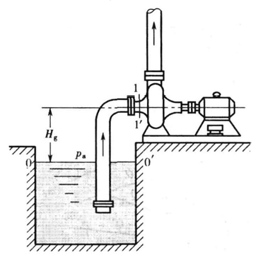

文章大纲
- 1. 离心泵
- 2. 其他类型液体输送机械
- 3. 气体输送和压缩装置
离心泵
离心泵的基本方程式
\[H_{\rm{T_\infty} }=\dfrac{u_{2}c_{2}\cos\alpha_{2}-u_{1}c_{1}\cos\alpha_{1} }{g}\]
在离心泵的设计中,为提高理论压头,一般使\(α_1=90°\),则\(\cosα_1=0\)，故可简化为：
\[H_{\rm{T_\infty} }=\dfrac{u_2c_2\cos\alpha_2}{g}\]
另外，表示离心泵的理论压头与理论流量、叶轮的转速和直径、叶片的几何形状之间的关系式： \[H_{\rm{T \infty} }=\frac{u_2^2}{g}-\frac{u_2 \cot \beta_2}{g \pi D_2 b_2} Q_T\] \[u_2=\frac{\pi D_2 n}{60}\] 式中 \(n\) —叶轮转速, \(\rm r/min\) 。
主要性能参数与特性曲线
离心泵的主要性能参数
流量
泵的流量：指单位时间内泵所输送的液体面积，单位有\(\rm m^3/s\)、\(\rm m^3/min\)或\(\rm m^3/h\)。
扬程 \(H\)
离心泵的压头又称扬程，它是指离心泵对单位重量（\(\rm 1N\)）的液体所能提供的有效能量,一般用\(H\)表示，其单位为\(\rm m\)。
效率
\[\eta=\eta_v\eta_m\eta_h\]
\[\begin{align} \eta_v&:容积损失 \\\eta_m&:机械损失\\\eta_h&:水力损失 \\\eta&:总效率 \end{align}\]
轴功率\(N\)与有效功率\(N_e\)
泵的功率有输入的轴功率\(P\)与输出的有效功率
\[\eta=\frac{N_e}{N}\]
\[N_e=Q\rho g H\]
轴功率是指泵轴所需的功率,离心泵一般用电动机驱动,其轴功率就是电动机传给泵轴的功率
有效功率是指单位时间内液体从泵中叶轮获得的有效能量
\[\begin{align}N_e&:有效功率，&\rm{W}\\ Q&:泵的流量，&\rm{m^3/s}\\ \rho&:液体密度，&\rm{kg/m^3}\\ H&:泵的扬程，&\rm{m}\\ g&:重力加速度，&\rm{m/s^3}\end{align}\]
离心泵的特性曲线
- 离心泵的\(H、P、n\)与\(q\)之间的关系曲线称为特性曲线
- 其数值通常是指额定转速和标定状况下的数值,可用实验测得
离心泵性能的影响因素与换算
液体物性影响
- 离心泵的压头、流量均与流体的密度无关，但是泵的轴功率随液体密度而改变
- 被输送液体的黏度增高，则泵体内部液体的能量损失增大，因此泵的压头、流量都要减小，效率下降，而轴功率增大
离心泵转速影响
比例定律表达式：
\[\frac{Q_{2} }{Q_{1} }=\frac{n_2}{n_1},~~\frac{H_2}{H_1}=\left(\frac{n_2}{n_1}\right)^2,~~\frac{P_2}{P_1}=\left(\frac{n_2}{n_1}\right)^2\]
离心泵叶轮直径的影响
切割定律：该式只有在叶轮直径的变化不大于\(5\% D_2\) 时才适用。
\[\frac{Q'}{Q}=\frac{D_2'}{D_2},\frac{H'}{H}=\left(\frac{D_2'}{D_2}\right)^2,\frac{N'}{N}=\left(\frac{D_2'}{D_2}\right)^3\]
离心泵的最大允许安装高度 P103
气蚀现象
泵的吸入口的低压是有限制的，这是因为当叶片入口附近液体的静压力等于或低于输 送温度下液体的饱和蒸气压时，液体将在该处部分汽化，产生气泡。含气泡的液体进人叶轮高压区后，气泡就急剧凝结或破裂。因气泡的消失产生局部真空，此时周围的液体以极高的速度流向原气泡占据的空间，产生了极大的局部冲击压力。在这种巨大冲击力的反复作用下，导致泵壳和叶轮被损坏,这种现象称为气蚀。
离心泵的抗气蚀性能
气蚀余量的定义式为：
\[ NPSH = \frac{p_1}{\rho g}+\frac{ {u_1}^2}{2g}-\frac{p_r}{\rho g}\]
临界气蚀余量(\(\rm{ m }\)): \[(NPSH)_{\mathrm{e} }=\frac{p_{1, \min }-p_{\mathrm{v} } }{\rho g}+\frac{u_1^2}{2 g}=\frac{u_k^2}{2 g}+H_{\mathrm{f}, 1-k}\]
离心泵的允许安装高度

\[H_{g}=\frac{p_{0}-p_{1} }{\rho g}-\frac{u_{1}^{2} }{2g}-H_{\mathrm{f},0-1}\]
若贮槽上方与大气相通, 则 \(p_0\) 即为大气压力 \(p_{\mathrm{a} }\), 可表示为： \[ H_{\mathrm{g}}=\frac{p_{\mathrm{a}}-p_1}{\rho g}-\frac{u_1^2}{2 g}-H_{\mathrm{f}, 0-1} \] 若已知离心泵的必需气蚀余量, 则： \[ H_{\mathrm{g}}=\frac{p_0-p_{\mathrm{v}}}{\rho g}-(N P S H)_{\mathrm{r}}-H_{\mathrm{f}, 0-1} \] 若已知离心泵的允许吸上真空度, 则： \[ \bbox[yellow]{ H_{\mathrm{g}}=H_{\mathrm{s}}{ }^{\prime}-\frac{u_1^2}{2 g}-H_{\mathrm{f}, 0-1} } \]
泵的允许吸上真空度\(H_{g}\)是泵的抗气蚀性能参数，其值与泵的结构、流量、被输送液体的性质及当地大气压等因素有关。\(H_g\)值通常由泵的制造厂实验测定。
\(H_{\mathrm{g} }\)与泵的吸入管路长度无关。
离心泵的工作点与流量调节
管路特性方程
\(\displaystyle \bbox[yellow]{ H_e=\Delta Z+ \frac{\Delta p}{\rho g}+\mathop {\frac{ {\Delta {u^2} }} { {2g} } }\limits_{ \approx {\text{0} }}+H_{f} }=K+H_f=K+f(Q_e)\)
\(\displaystyle \bbox[yellow]{H_f=\lambda \dfrac{l}{d}\dfrac{u^2}{2} }\)\(\quad \bbox[yellow]{ u=\dfrac{Q_e}{\frac{\pi}{4}d^2} }\)
\(H_{e}\) - 管路系统所需的压头（题目中也是泵的扬程），m; \(H_{f}\) - 管路系统的压头损失，m;
泵的工作点
- 一台离心安装在一定的管路系统中工作, 包括阀门开度也一定时,就有一定的流量与压头
- 此流量与压头是离心泵特性曲线与管路特性曲线交点处的流量与压头。此点称为泵的工作点
- 联立： 泵特性方程 \(H=f(Q)\) 管路特性方程 \(H_e=K+B Q_{\mathrm{e} }{ }^2\)
离心泵的类型与选用
类型（清水泵）
- 清水泵一般用于工业生产(输送物理、化学性质与清水类似的液体)、城市给排水和农业排灌
- IS型单级单吸式离心泵输送介质的温度不超过\(80^{\circ}C\),口径\(40\sim200mm\),流量范围\(6.3\sim400m^3/h\),扬程范围\(5\sim125m\)
- 以IS50-32-250为例:
- IS — 国际标准单级单吸清水离心泵
- 50 — 泵吸入口直径,\(mm\)
- 32 — 泵排出口直径,\(mm\)
- 250 — 泵叶轮的名义尺,\(mm\)
- 如果输送液体流量要求较大而扬程不高时,可选用S型单级双吸离心泵
如果扬程要求较高,可选用D、DG型多级离心泵
如果输送温度低于150\(^{\circ}C\)的流体,可选用IS型单级单吸式离心泵,高效节能
选择
- 确定输送系统的流量与压头
根据输送系统管道的安排，用伯努利方程式计算管路所需的压头 - 选择泵的类型与型号
\(q_{V泵}>q_{V需}，H_泵>H_需\)
其他类型液体输送机械
往复泵
往复泵的理论平均流量
往复泵的流量（排液能力）只与泵的几何尺寸和活塞的往复次数有关，而与泵的压头及管路情况无关，即无论在什么压头下工作只要往复一次，泵就排出一定体积的液体，所以往复泵是一种典型的容积式泵。
往复泵的流量调节方法有两种：①旁路（阀）调节、②改变活塞冲程和往复次数
\[\begin{align}单动泵&：q_{V理}=AS_n\\ 双动泵&：q_{V理}=（2A-a）S_n\\\\ q_{V理}&：往复泵的理论流量,\rm{ m^3/min }\\ A&:活塞/柱塞的截面积,A=\frac{\pi}{4}D^2\\ D&:活塞直径，\rm{ m }\\ S&:活塞/柱塞的行程，\rm{ m }\\ n&:活塞/柱塞的往复频率，\rm{ 1/min }\\ a&:活塞/柱塞杆截面积\end{align}\]
容积效率
在泵的操作中,由于吸入阀和排出 阀启、闭滞后的漏液以及填料函处漏液,实际平均流量\(q_V\)小于\(q_{V理}\)，二者的关系为\[q_V=\eta_vq_{V理}\]
- \(\eta_v\)为容积效率,一般约为\(0.9\sim0.97\)
- 随着泵转速增大,将受汽蚀的影响而降低有时可降到0.8以下
旋转泵
- 齿轮泵
- 螺杆泵
旋涡泵
气体输送和压缩装置
离心式通风机
流量
\[q_{V0}=q_V\frac{\rho}{\rho_0}\]
风压
全风压为静风压和动风压之和 \[p_t=\rho gh=(p_{s2}-p_{s1})+\bigg(\frac{\rho u_2^2}{2}-\frac{\rho u_1^2}{2}\bigg)\\ 各项单位：J/m^3=N\cdot m/m^3=N/m^2=Pa\\ p_s:静压\\ \frac{\rho u^2}{2}=p_d:动压\\ p_s+p_d:全压\]
通风机的全风压\(p_t\)为出口截面的全压\((p_{s2}+p_{d2})\)与进口截面的全压\((p_{s1}+p_{d1})\)之差值
将全风压改写为\[p_t=(p_{s2}-p_{s1})+(p_{d2}-p_{d1})\\ p_t=\underset{出口全压}{(p_{s2}+p_{d2})}-(\underset{进口全压}{p_{s1}+p_{d1} })\]
静风压\[p_{st}=(p_{s2}-p_{s1})-p_{d1}\\ p_{st}=全风压p_t-动风压p_d\]
全风压效率\[\eta=\frac{P_e}{P}\\ P:轴功率\\ p_e=p_t\cdot q_V:有效功率\]
旋转鼓风机与压缩机
往复压缩机
真空泵 P136
- 往复真空泵
- 水环真空泵
- 啧射泵


发表您的看法